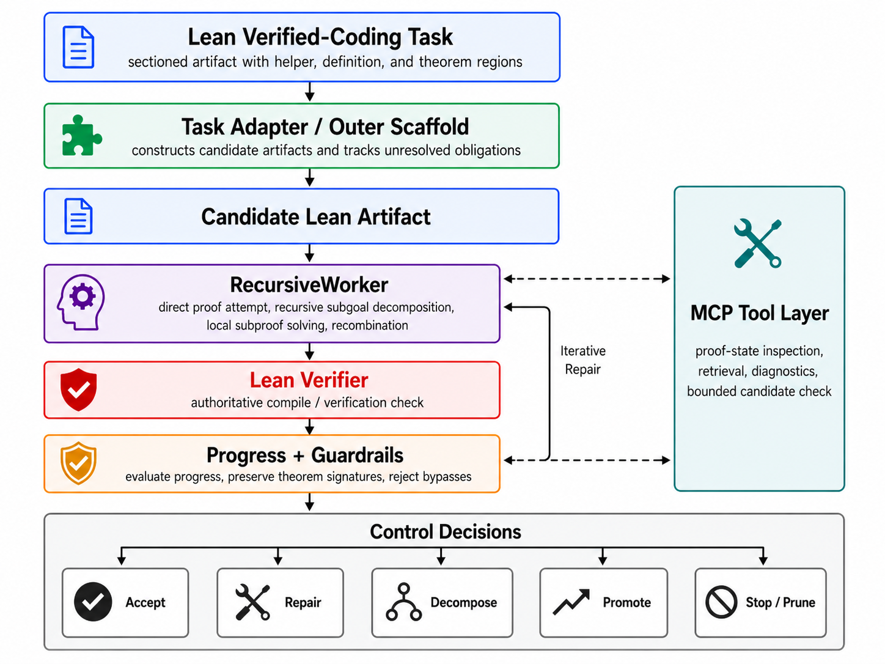
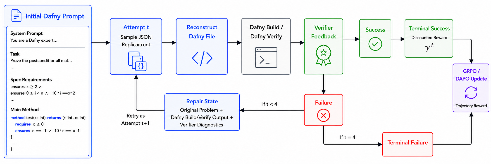
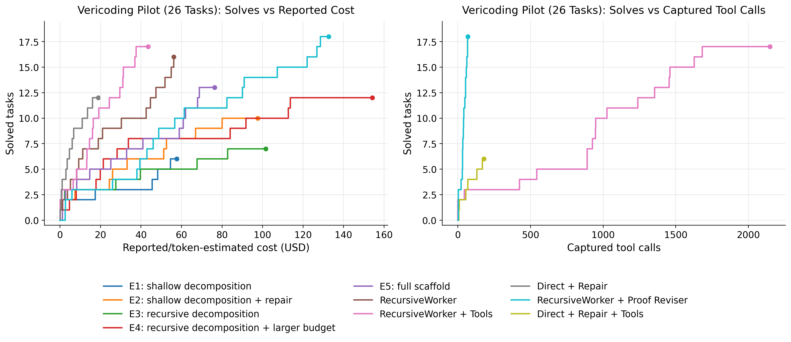

A verifier-guided inference scaffold in Lean treats proof generation as decomposed subgoal search with feedback and repair, evaluated on VeriCoding, VERINA, and a new Dalek-Bench.
Abstract
Automated formal verification remains challenging for large language models because data for proof assistants and verification-aware languages is scarce, and correctness depends on satisfying precise machine-checkable specifications rather than producing plausible code. This thesis studies how verifier environments can improve LLM generation of verified programs and proofs through reinforcement learning from verifiable rewards (RLVR) and verifier-guided inference-time search. First, we train open-source models in Dafny with RLVR using Group Relative Policy Optimization (GRPO) and related variants, assembling generated candidates into complete programs and scoring them with compiler and verifier outcomes. Initial experiments on an APPS-derived Dafny dataset increased verified reward from 2.2% to 58.1%, but revealed specification hacking, where models exploit weak formal specifications instead of implementing the intended solutions. After filtering underspecified and vulnerable tasks, multi-turn RLVR on the refined benchmark improves the verified pass rate from 9.7% to 31.1%. Second, we develop a verifier-guided inference scaffold in Lean that treats proof generation as structured search over decomposed subgoals, verifier feedback, diagnostics, and repair. With a fixed base model, the full scaffold with proof reviser improves pass rate on an initial VeriCoding pilot set from 46.2% under direct repair to 69.2%. On the larger VERINA dataset, whole-task decomposition plus proof reviser solves 7 of 42 previously unsolved tasks. We also introduce Dalek-Bench, a repository-scale Lean benchmark derived from the Rust $\texttt{curve25519-dalek}$ verification project; preliminary results remain weak, indicating that stronger progress evaluation and task-specific tool-use policies are still needed.
Problem
Automated formal verification remains difficult for LLMs because training data for proof assistants is scarce, and correctness requires satisfying precise machine-checkable specifications rather than producing plausible code.
Approach
The thesis studies two complementary approaches. First, reinforcement learning from verifiable rewards (RLVR) using GRPO trains models to generate verified Dafny programs, with a multi-turn verifier-feedback environment for iterative repair. Second, a verifier-guided inference scaffold in Lean treats proof generation as structured search over decomposed subgoals, verifier feedback, diagnostics, and repair. A new benchmark (Dalek-Bench) is introduced from a production Rust cryptography verification project.

Figure 5.1: Overview of the verifier-in-the-loop scaffold for Lean verified coding. The task adapter manages sectioned VeriCoding artifacts, while RecursiveWorker performs recursive proof search over theorem and lemma obligations. Lean verification is the authoritative acceptance gate; the MCP tool layer provides auxiliary inspection and retrieval support.

Figure 4.5: Multi-turn verifier-feedback environment for Dafny RLVR. The policy samples a JSON replacement at attempt t , after which the environment reconstructs the Dafny file and evaluates it with dafny build / dafny verify . If verification succeeds, the trajectory terminates with discounted reward \gamma^{t-1} ; otherwise, verifier diagnostics define a local repair state for attempt t+1 , unt
Results
On a filtered Dafny benchmark, multi-turn RLVR improves verified pass rate from 9.7% to 31.1%. The Lean scaffold with proof reviser improves pass rate from 46.2% (direct repair) to 69.2% on a VeriCoding pilot set and solves 7 of 42 previously unsolved tasks on VERINA. Initial experiments revealed specification hacking where models exploit weak formal specifications.

Figure 5.4: Budget-efficiency curves on the 26-task Vericoding pilot set. The left panel plots cumulative solved tasks against reported or token-backed dollar cost, omitting runs whose provider cost was not reliably captured. The right panel plots solved tasks against captured interactive tool calls and therefore includes only runs with nonzero tool-event logging. The full scaffold with proof revi